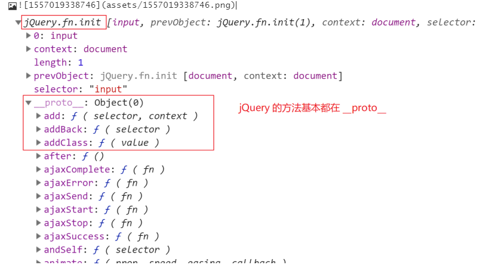
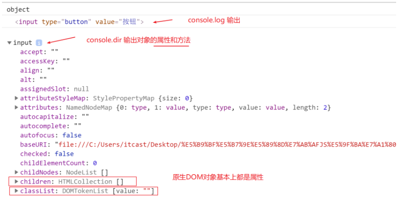
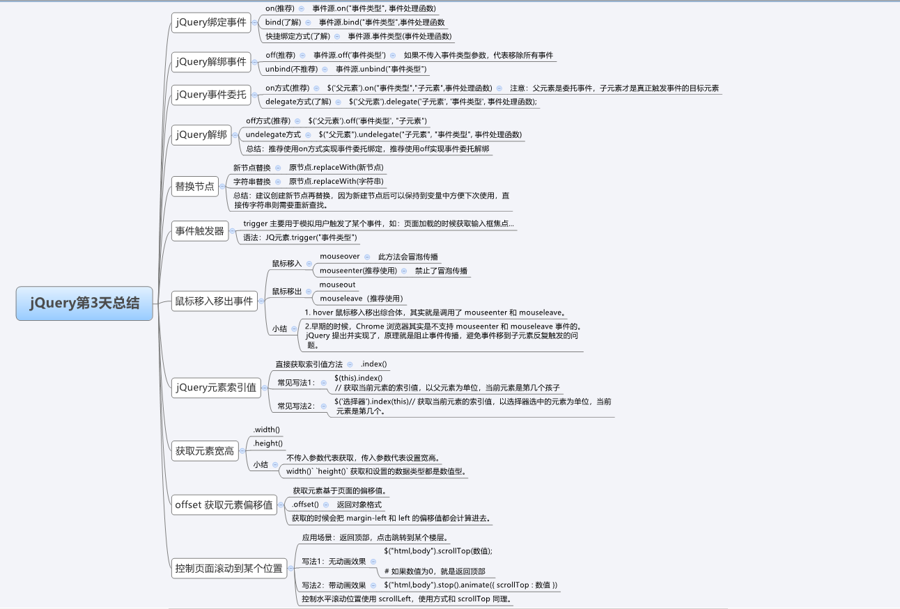

如何区别 JS DOM对象和 JQ 包装对象？
JQ对象其实是经过包装的DOM对象，包装后可调用 JQ 的方法。
JS 对象基本上都是属性为主，JQ基本上都方法为主。
可通过
console.dir()
JQ 对象输出

DOM 对象输出

学习 JQ事件绑定方式 on
方式1：（推荐使用 on）
事件源.on("事件类型",事件处理函数);方式2：（了解）
事件源.bind("事件类型",事件处理函数);方式3：（快捷绑定方式）
事件源.事件类型(事件处理函数)推荐使用 on 实现事件绑定
学习 JQ事件解绑方式 off
方式1：（推荐使用 off）
事件源.off("事件类型");
如果不传入事件类型参数，代表移除所有事件。方式2：
事件源.unbind("事件类型");推荐使用 off 解绑事件
学习 JQ事件委托
on 的方式：
$("父元素").on("事件类型","子元素",事件处理函数);
父元素: 委托事件
子元素：子元素才是真正触发事件的目标元素delegate 的方式：(了解)
$("父元素").delegate ("子元素", "事件类型", 事件处理函数);
off 方式
$("父元素").off("事件类型","子元素");undelegate
$("父元素").undelegate ("子元素", "事件类型");推荐使用 on 实现事件委托绑定，注意区别子元素和事件类型的参数顺序。
推荐使用 off 实现事件委托解绑。
通过手册查阅 replaceWith 替换节点的用法
新节点替换
原节点.replaceWith(新节点)字符串替换
原节点.replaceWith(字符串)建议创建新节点再替换，因为新建节点后可以保持到变量中方便下次使用，直接传字符串则需要重新查找。
学习事件触发器触发事件
trigger 主要用于模拟用户触发了某个事件，如：页面加载的时候获取输入框焦点...
JQ元素.trigger("事件类型")
学习新的鼠标移入移出事件
鼠标移入：
mouseover
mouseenter // 推荐使用鼠标移出：
mouseout
mouseleave // 推荐使用之前我们学习了 hover 鼠标移入移出综合体，其实就是调用了 mouseenter 和 mouseleave。
早期的时候，Chrome 浏览器其实是不支持 mouseenter 和 mouseleave 事件的。
jQuery 提出并实现了，原理就是阻止事件传播，避免事件移到子元素反复触发的问题。
通过 JQ 提供的方式获取元素索引值
jQuery 直接提供了获取元素索引值的方法。
.index()常见写法1：
$(this).index()
// 获取当前元素的索引值，以父元素为单位，当前元素是第几个孩子。常见写法2：
$("选择器").index(this)
// 获取当前元素的索引值，以选择器选中的元素为单位，当前元素是第几个。大部分情况下两种写法都可以。
获取元素宽高
// 获取或设置宽度
.width()
// 获取或设置高度
.height()
# 不传入参数代表获取，传入参数代表设置宽高。width() height() 获取和设置的数据类型都是数值型。
获取元素的偏移值
获取元素基于页面的偏移值。
.offset()
# 返回对象格式 { left: xx, top: xx }获取的时候会把 margin-left 和 left 的偏移值都会计算进去。
获取和设置页面滚动位置
应用场景：返回顶部，点击跳转到某个楼层。
写法1：无动画效果
$("html,body").scrollTop(数值);
# 如果数值为0，就是返回顶部写法2：带动画效果
$("html,body").stop().animate({ scrollTop : 数值 })控制水平滚动位置使用 scrollLeft，使用方式和 scrollTop 同理。
思维脑图总结：

微博新闻发布效果：
<!DOCTYPE html>
<html>
<head>
<meta charset="UTF-8">
<title>微博发布效果</title>
<style>
* {
margin: 0;
padding: 0;
list-style: none;
}
.weibo {
width: 600px;
border: 1px solid #ccc;
margin: 100px auto;
padding: 10px;
}
.weibo-text {
width: 590px;
height: 140px;
padding: 5px;
border: 1px solid #ccc;
outline: none;
resize: none;
}
.weibo-text:focus {
border-color: #f60;
}
.weibo-btn {
width: 80px;
height: 30px;
background-color: #f90;
color: #fff;
border: 0 none;
margin-top: 5px;
border-radius: 3px;
cursor: pointer;
outline: 0 none;
}
.weibo-list {
padding-top: 10px;
}
.weibo-list li {
font-size: 14px;
line-height: 30px;
border-bottom: 1px dotted #ccc;
overflow: hidden;
}
.weibo-list li p {
float: left;
cursor: pointer;
}
.weibo-list li span {
float: right;
cursor: pointer;
}
.weibo-list li input {
height: 24px;
line-height: 24px;
width: 300px;
font-size: 14px;
border: 0 none;
}
</style>
<!-- 1. 引入 jQuery 核心库 -->
<script src="./lib/jquery-1.12.4.js"></script>
<!-- 2. 新建 script 写业务逻辑 -->
<script>
// 3. jQuery 入口函数，业务代码写到入口函数内部
$(function () {
// **********业务代码开始**********
// 1.判断输入微博的长度，如果为0提示，超过120提示
var $userInput = $('.weibo-text');
var $weiboBtn = $('.weibo-btn');
var $weiboList = $('.weibo-list');
var newInput
console.log($userInput, $weiboBtn, $weiboList);
$weiboBtn.on('click', function(){
// 获取内容长度
// trim()方法意味着删除左右2边的空格
var userText = $userInput.val().trim();
if(userText.length === 0){
alert("请输入内容再发布哦❤");
// 中断函数
return;
}else if(userText.length > 120){
alert("请保证内容长度小于120个字符哦❤");
return;
}else{
// 2. 把输入的微博内容，添加到 .weibo-list 列表中
// 获取用户输入的内容并创建元素插入到.weibo-list的最前面
var newTag = $("<li><p>" + userText + "</p><span>删除</span></li>");
$weiboList.prepend(newTag);
// 3. 发布成功后，清空文本域 .weibo-text
$userInput.val("");
// 4. 发布的时候，有滑动显示动画效果
// 思路：先将newTag隐藏然后通过slideDown()下滑方式显示
newTag.hide().slideDown(500);
}
});
// 5. 点击删除按钮，删除对应那条微博 事件委托实现
$weiboList.on('click', 'li span' ,function(){
// 找到当前节点的父节点然后删除这个父节点也就是删除li
$(this).parent().remove();
});
// 6. 点击 p 标签，p 标签能替换成 input 标签进行微博编辑
$weiboList.on('click', 'li p' ,function(){
// 保存当前p标签的内容
var pOldString = $(this).text();
newInput = $('<input text="text" />');
// 替换标签
$(this).replaceWith(newInput);
// 将p标签原来的内容给input的value值
newInput.val(pOldString);
// 输入框获取焦点
newInput.trigger('focus');
});
// 7. input 标签失去焦点后，input 标签替换回 p 标签
$weiboList.on('blur', 'li input', function(){
// 获取input标签的value值
var newInputValue = newInput.val();
console.log(newInputValue);
var newP = $('<p>' + newInputValue + '</p>')
$(this).replaceWith(newP);
});
// 8. 页面发布的时候，通过事件触发器自动获取文本域的焦点
$userInput.trigger('focus');
// 9. 利用事件对象，判断回车键，实现按回车键发布微博。
$userInput.on('keyup', function(event){
if(event.keyCode === 13){
$weiboBtn.trigger('click');
}
});
});
</script>
</head>
<body>
<div class="weibo">
<textarea class="weibo-text"></textarea>
<input class="weibo-btn" value="发布" type="button">
<ul class="weibo-list">
<li>
<p>快来收了这九款用上就停不下来的应用吧！！</p>
<span>删除</span>
</li>
<li>
<p>超级详细的云南大理自助游攻略</p>
<span>删除</span>
</li>
<li>
<p>外国最近很火的舞蹈，舒服简单自然，太棒了！</p>
<span>删除</span>
</li>
</ul>
</div>
</body>
</html>